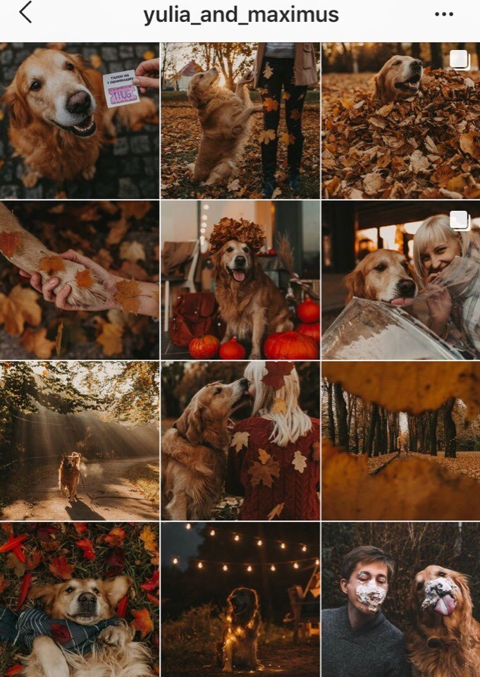

Секреты при оформлении ленты
Простые советы, которые улучшат внешний вид вашей ленты в Instagram.
Нам в этом поможет приложение Preview,
поэтому скачайте его, чтобы вы могли одновременно читать советы и воплощать их в жизнь.
Это приложение позволяет заранее планировать внешний вид ленты в Instagram.
При желании, можно распланировать визуальный контент в профиле на месяц вперед.
Готовы?
-
Выберите макет сетки.
Что такое сетка?
Общая схема сетки представляет собой определенный порядок, в котором посты располагаются в профиле. Она поможет узнать, какую фотографию поставить рядом с другой фотографией, чтобы они сочетались между собой и формировали единую картину. Макет позволяет легко выработать схему сетки для Instagram.
Вот один довольно интересный вариант оформления с "перетекающими" фото.
При этом вариантов может быть много, но это оформление уже отходит.
-

Выберите тему профиля.
Тему профиля можно назвать его душой. Тема Instagram-аккаунта – это ваша визуальная личность, то, как выглядит ваша страница и какое впечатление она производит.
Какую тему вы бы хотели? Дерзкую, тропическую, светлую, нежную, яркую, минималистичную?
Приведу вам пример "теплой" ленты в оранжево-золотистых оттенках:
-
Выберите тематику контента, который вы хотите публиковать.
Тема – это не только цвета вашего аккаунта. Это также и то, что вы в нем публикуете. Это довольно важный момент.
Если вы являетесь блогером или владельцем бизнеса, я советую подумать о том, чем вы увлекаетесь и о чем хотите писать в вашем Instagram-аккаунте.
Посмотрите на ваших любимых блогеров. Большинство из них обычно пишет на одни и те же темы, поэтому вы и следите за ними. Эти темы заставляют людей возвращаться в определенные профили снова и снова.
Так чем же вы интересуетесь? Выберите несколько моментов (от 1 до 5), которые вы любите и в которых разбираетесь, и пишите именно об этом. Это ваша история, основа вашей уникальности. Не бойтесь позволить вашей личности раскрыться и ярко засиять.
Пример:
@sofia__graf: материнство, жизнь на Бали, осознанность, удаленная работа. -
Выберите ОДИН фильтр и применяйте его ко всем фотографиям.
Любая тема – ничто без единой обработки.
Самый простой способ выработать свой стиль – применять один и тот же фильтр ко всем фотографиям.
Откуда можно взять фильтры? Программа "Preview" предлагает достаточное количество разных вариантов (например, "Белый", "Темный", "Пастель»" и т.д.). Выберите подходящий вам фильтр и придерживайтесь его.
Посмотрите, как атмосферно выглядит профиль, когда вы используете одну и ту же обработку на всех фотографиях.
-
Создайте определенный порядок публикации своих постов, чтобы они формировали единую композицию.
- На этом этапе у вас уже есть макет;
- Вы знаете, какой хотите видеть общую тему своего профиля;
- Вы знаете, на какие темы хотите писать;
- И вы уже подобрали фильтр.
Отлично!
Ваш стиль уже начинает выглядеть очень хорошо! Теперь вам нужно создать единую композицию.
Почему некоторые Instagram-аккаунты выглядят так красиво?
Потому что их авторы знают, какие фотографии хорошо смотрятся рядом.
Хитрость состоит в том, чтобы переупорядочить порядок ваших постов таким образом, чтобы они образовали единую композицию. Бывает очень трудно угадать, какие фотографии хорошо сочетаются между собой. Для предварительного просмотра очень удобно использовать то же приложение "Preview".
Вы можете использовать его, чтобы посмотреть на внешний вид аккаунта предварительно. Просто загрузите свои фотографии/видео в приложение и перетащите их с места на место, чтобы образовать единую композицию. Если вы поймете, что фотография не подходит общему стилю вашего аккаунта, просто удалите ее.
Как понять, какие посты следует расположить рядом друг с другом?
Чтобы сбалансировать внешний вид вашего аккаунта, посмотрите на цвета и темы ваших фотографий. Как правило, блогеры предпочитают избегать расположения рядом изображений, которые слишком похожи друг на друга. Они их разделяют. Выделяя слишком похожие фотографии, вы привлечете к ним интерес. Благодаря этому ваш профиль будет выглядеть более сбалансированно.
В официальном профиле приложения "Preview" можно увидеть интересный пример использования макета.
-
Цветовая гамма.
- Для сбалансированности разных цветов и оттенков в оформлении вашего профиля вы можете сделать следующее:
- Выберите 2-3 цвета, которые вы планируете всегда использовать в своих фотографиях;
- Затем расположите фотографии, согласно выбранному макету сетки, чтобы увидеть общий вид.
Например:
@micmarketing: белый, голубой. -
Всегда проверяйте фон ваших фотографий.
Этот простой совет преобразит вашу ленту: обратите внимание на фон ваших фотографий и цитат. Придерживайтесь одного стиля и цветовой гаммы.
Не допускайте ситуации, когда фон будет "выбиваться" из общей картины (если, конечно, это не является вашей авторской задумкой, чтобы привлечь внимание к одному из элементов на фото).
Посмотрите на профили известных блогеров. Они стараются выбирать чистые и простые фоны:
@meghan_faulk: черный. -
Всегда используйте один и тот же стиль рамок.
Этот совет актуален, если вы хотите добавить рамки на свои фотографии в Instagram.
Это потрясающий метод разнообразить профиль. Они создают свободное пространство между вашими фотографиями. Благодаря им ваша лента создает стильное впечатление. Рамки идеально подойдут, если вы фотографируете множество разных вещей разных цветов и оттенков.
В приложении "Preview" есть несколько разных вариантов рамок. Они выглядят интересно. Можно использовать самые разные рамки. Возможно, это произведет положительный эффект на посетителей вашего профиля. Но это как повезет.
Есть очень простой совет: используйте одну и ту же рамку на всех ваших фотографиях. Благодаря этому лента вашего аккаунта будет выглядеть профессионально и гармонично.
Вот пример профиля в Instagram, где для оформления использованы рамки.
-
Естественный свет – ваш лучший друг
Сколько раз вы слышали этот совет?
Если вы не используете естественный свет при съемке фотографий, вам обязательно нужно попробовать сделать это.
Зачем? Потому что тогда вы получите более качественные и более детализированные фотографии. Фотографии, сделанные при естественном освещении, также будут выглядеть лучше при применении фильтров. Лучший свет для фотографирования утром и в конце дня.
Попробуйте фотографировать возле окна.
-
Фотографии хорошего качества всегда выигрывают.
Возможно, этот совет покажется глупым, но качество фотографий имеет большое значение. Фотография высокого качества обладает высокими показателями резкости и привлекает внимание, заставляет людей открыть ваш профиль и следить за вашими обновлениями. Поэтому всегда, перед тем как выложить фотографию, убедитесь, что она хорошего качества.
Не используйте фронтальную камеру (она обладает более низким качеством съемки).
-
Советы по редактированию:
- воспользуйтесь приложением PhotoEditorPreview;
- добавьте немного контраста;
- добавьте немного резкости.
-
Получайте удовольствие!
Это главный секрет успешного аккаунта в Instagram.
Получайте удовольствие!Ваша лента никогда не будет выглядеть так, как вы хотите, если процесс ведения профиля не приносит вам удовольствия.
Любите то, что вы делаете. Не спешите создавать контент.
Получайте удовольствие от этого.